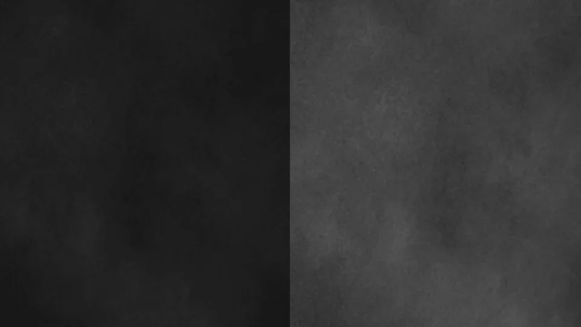
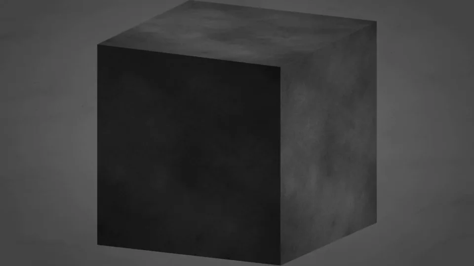
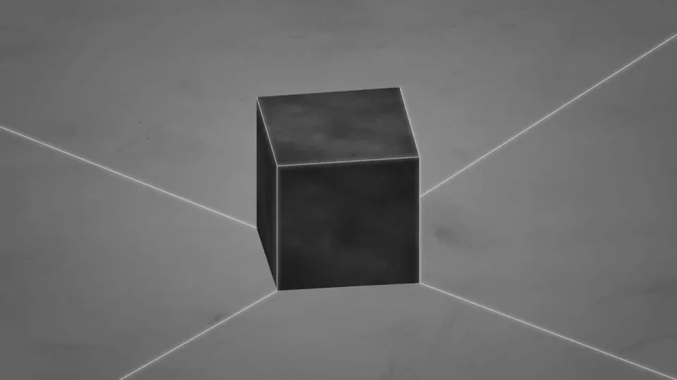
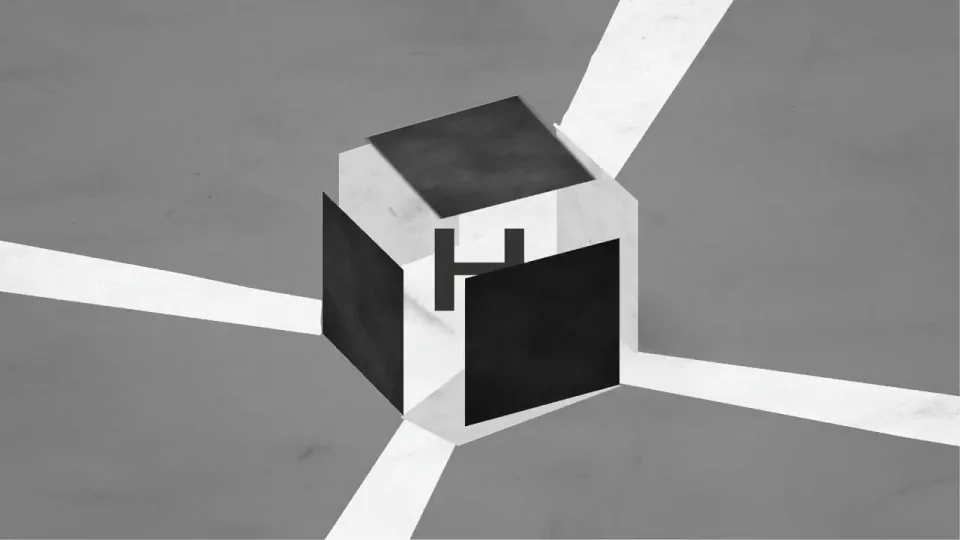
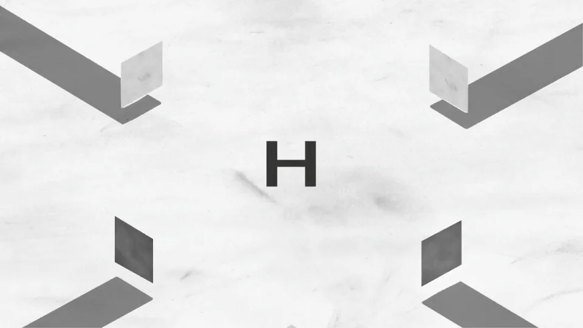
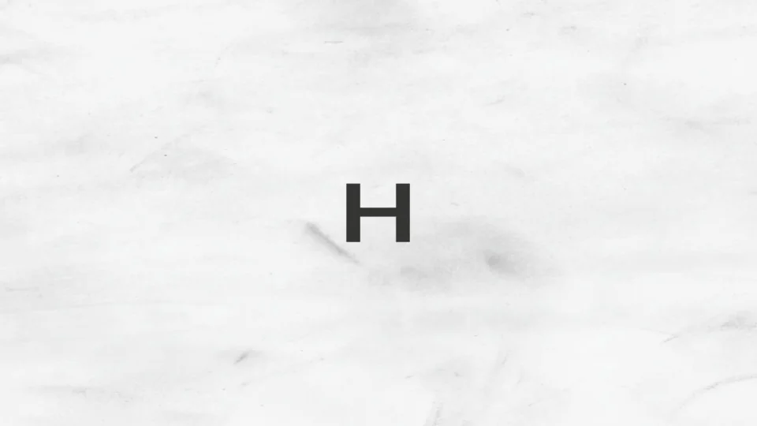

Harvey / V334
石膏方块拆出 H
先旋转立方体并拉远，白色细缝沿边缘出现后，各面向外散开。H 留在原中心，分离距离逐渐加大到面板离开画幅。
构图与编排 可播放 · 可替换内容
整体编排规则示例
查看 HTML 源码
<!doctype html><html lang="zh-CN"><meta charset="utf-8"><meta name="viewport" content="width=device-width,initial-scale=1"><title>石膏方块拆出 H · sequence</title><style>html,body{margin:0;width:100%;height:100%;overflow:hidden;background:#575757}canvas{display:block;width:100%;height:100%;object-fit:contain}</style><body data-mode="sequence"><canvas width="1000" height="600"></canvas><script src="data.js"></script><script src="common.js"></script><script src="scene.js"></script><script src="bridge.js"></script></body></html>画面元素立方体六面白色裂缝中央字母地面投影
MOTION LANGUAGE
动作与构图
局部动作 · 构图规则
01
外壳沿面法线分离，字母不动
外壳沿面法线分离，字母不动规则示例
查看 HTML 源码
<!doctype html><html lang="zh-CN"><meta charset="utf-8"><meta name="viewport" content="width=device-width,initial-scale=1"><title>石膏方块拆出 H · sequence</title><style>html,body{margin:0;width:100%;height:100%;overflow:hidden;background:#575757}canvas{display:block;width:100%;height:100%;object-fit:contain}</style><body data-mode="clip" data-start="1.3" data-end="3.6"><canvas width="1000" height="600"></canvas><script src="data.js"></script><script src="common.js"></script><script src="scene.js"></script><script src="bridge.js"></script></body></html>先旋转立方体并拉远，白色细缝沿边缘出现后，各面向外散开。H 留在原中心，分离距离逐渐加大到面板离开画幅。
02
从重材质切换到轻留白
开始用深灰石膏和侧面明暗区分体积；裂缝变宽时背景同时变浅，结尾只留黑字与轻微地面影。替换字母需先检查外壳能完整遮住它。
SEQUENCE
段落与节奏
点击段落，定位到上方编排示意。






画面参考 · 离散静帧
KEEP THE RELATIONSHIPS
制作其他主题
- 替换中心短字标，保留外壳拆开而主体不动的揭示。
制作约束
立方体六面 / 白色裂缝 / 中央字母 / 地面投影
- 先旋转立方体并拉远，白色细缝沿边缘出现后，各面向外散开。H 留在原中心，分离距离逐渐加大到面板离开画幅。
- 开始用深灰石膏和侧面明暗区分体积；裂缝变宽时背景同时变浅，结尾只留黑字与轻微地面影。替换字母需先检查外壳能完整遮住它。